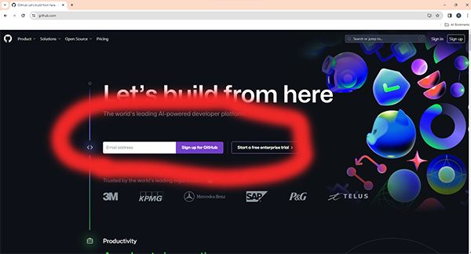
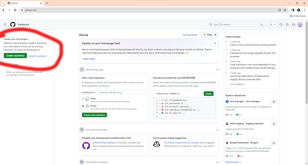
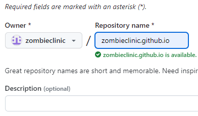
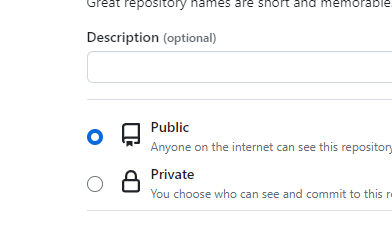
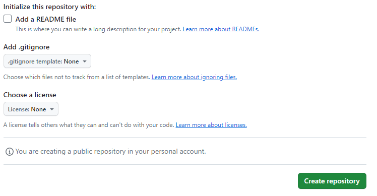
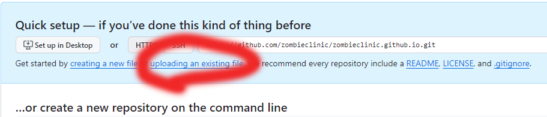
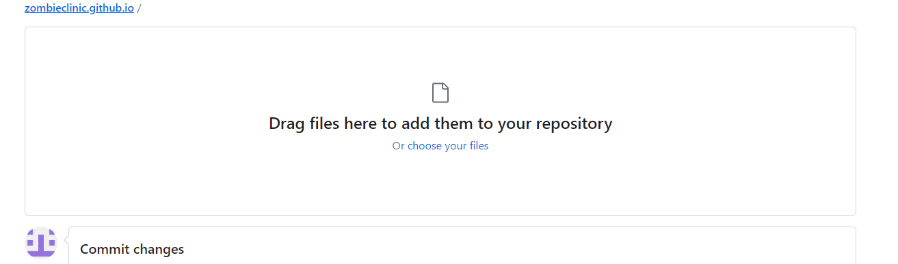
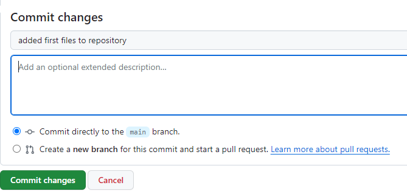

STEP THREE!
Sign in or make create a user account with your email.
Tip, don't use any capital letters in your username.
Once logged in click Create repository .

STEP FOUR!
Name the repository the same exact name as your user name and add .github.io at the end, or you will find that your link will be your username/name of repository.
Example, zombieclinic.github.io

You also want to make sure its on public as this will be a website for everyone to view.

Next you will want to set up your options, like if you want to add a README text file, or set up a template, and add any licenses.
Once done click Create repository.

STEP FIVE!
Click Uploading an existing file.

Ether drag all the files onto the screen, or click choose files and manually add them.

STEP SIX!
Now commit changes and make sure to note what you changed or added here.
For example "added first files to repository".

STEP SEVEN!
Wait a few mins for all your files to finish uploading and for github to make your website.
Then type in your repository name in your address bar like this and hit enter.

Congratulations you just created your first github website!
Here is a video in 4 parts that also covers everything we went over.
Part 1
Part 2
Part 3
Part 4
Tip, don't use any capital letters in your username.
Next you will want to set up your options, like if you want to add a README text file, or set up a template, and add any licenses.
Once done click Create repository.
For example "added first files to repository".